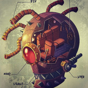

引用
当你听到眼魔型动力飞船启动时发出的机械咔哒声，你会以为是死神在掰动自己的手指。
眼魔型动力飞船的外型看起来就像一个巨型的眼魔，原先眼睛的位置被观察窗取代。飞船可以用做交通工具，可以用作实验室，也可以当作战争机器。飞船最高可乘坐六名类人生物，并且可以在任何地形与媒介中通行。早期的眼魔型动力飞船依靠复杂且危险的机械面板控制，但近期的飞船逐渐开始采用魔法驱动的声音控制。声控技术并不完善，有时不太准确。
装备与选择 眼魔型动力飞船装备了多种多样的探测设备，使其能检测化学成分，发现魔法波动和制作大师级的马丁尼。物如其名，眼魔型动力飞船的武器也拥有强大的解离射线（为了避免法律问题对外宣称为垃圾处理器）。位于飞船两侧的舷窗和背后的舱口，使玩家能在飞船内对外发动攻击。
眼魔型动力飞船
巨型载具 （15ft.x 15ft.）
乘客容量 1位船员，5位乘客
载货量 船员与乘客的正常负重
旅行速度 3里/小时（72里/天）
力量18（+4） 敏捷12（+1） 体质18（+4）
智力0
感知0
魅力0
伤害免疫：毒素，心灵
状态免疫：目盲，魅惑，耳聋，力竭，恐慌，麻痹，石化，中毒，倒地，
震慑，昏迷
动作
眼魔型动力飞船每回合有1动作。
当飞船没有船员时每回合有0动作。
眼波射线 眼魔型动力飞船可以使用它的射线触手攻击。
移动 眼魔型动力飞船可以使用船舵控制魔法推进器移动。
船体
AC
18
HP 200 (低于15点的伤害无法减少船体HP)
控制体系：船舵
AC
16
HP 25
移动取决于魔法推进器。船舵只能在船体HP低于100点（包括100点）时被攻击。
当船舵被摧毁，眼魔型动力飞船无法移动。
移动系统：魔法推进器
AC
16
HP 100 每损失25点hp减低5尺速度。
速度（魔法） 掘穴30尺，飞行30尺（悬浮），游泳30尺
武器：射线触手（6个）
AC
14
HP 50
魔法攻击：眼魔型动力飞船的船员可以对视野内，半径120尺内的敌人发射至多3个射线。
解离射线。目标必须进行一次 DC
15的敏捷豁免，豁免失败者将受到 18（4d8）的力场伤害，
如果该伤害 将目标的生命值降至 0，则其身体将化为一堆灰尘。
如果目标是一个大型或更小体型的非魔法物件，或者魔法造物， 则它的豁免直接失败。
如果目标是巨型或更大体型的物件，则解离射线可以分解其中 10
尺立方状区域的部分。
衰弱射线。目标必须进行一次 DC 15 的体质豁免，豁免失败者将受到 18（4d8）的黯蚀伤害，豁免成功则伤害减半。
麻痹射线。目标必须进行一次 DC 15
的体质豁免，豁免失败者将陷入 1 分钟的麻痹状态。
该目标可以在每个其自己回合结束时再进行一次该豁免，豁免成功则终止该效应。

眼魔型动力飞船